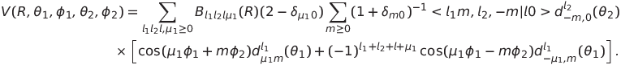

Basis subroutine: hibastp1sg.f
A Symmetric top and a Linear Molecule in a 1Σ State
Ref. C. Rist, M. H. Alexander, and P. Valiron, J. Chem. Phys. 98, 4662 (1993).
The potential is to be fitted in the following form

The angles are those defined in the above literature. Basis type 9 uses a simpler form of angular expansion, but that expansion is very inefficient in scattering calculations.
Unlike earlier basis routines, this basis routine allows the user to define which terms to include in the angular expansion without limitations other than the total number of terms (which is fixed in Hibridon). This information must be written to the lms array in the mod_bastp1sg module by the loapot subroutine. See pot_stp1sg_qma.f for an example.
Coupled states calculations are NOT supported in this basis routine.
IPOTSY: cylindrical symmetry of potential. Presently only symmetric tops with three-fold symmetry are supported. For these system, IPOTSY = 3.
IOP: bitwise flag for rotational channel basis of different symmetry. The symmetry groups are:J1MAX: the maximum rotational angular momenta in the channel expansion for the symmetric top.
E1MAX: the maximum energy of a state to be included in the rotational state basis for the symmetric top.
J2MIN: the minimum rotational angular momentum for the linear molecule.
J2MAX: the maximum rotational angular momentum for the linear molecule.
IPOTSY2: step used in iterating the rotational angular momentum for the linear molecule. For H2, IPOTSY2 can be set to 2 so that either para (even J2MIN and J2MAX) or ortho (odd J2MIN and J2MAX) levels are included.
DELTA: inversion splitting (assumed to be the same for all rotational levels). This energy is added to - inversion levels (groups 1 and 3).
 At the present time, elastic cross sections are incorrectly calculated using the INTCRS command for channels where both J and J2 are nonzero. Cross sections are correctly calculated using PRINTC.
At the present time, elastic cross sections are incorrectly calculated using the INTCRS command for channels where both J and J2 are nonzero. Cross sections are correctly calculated using PRINTC.